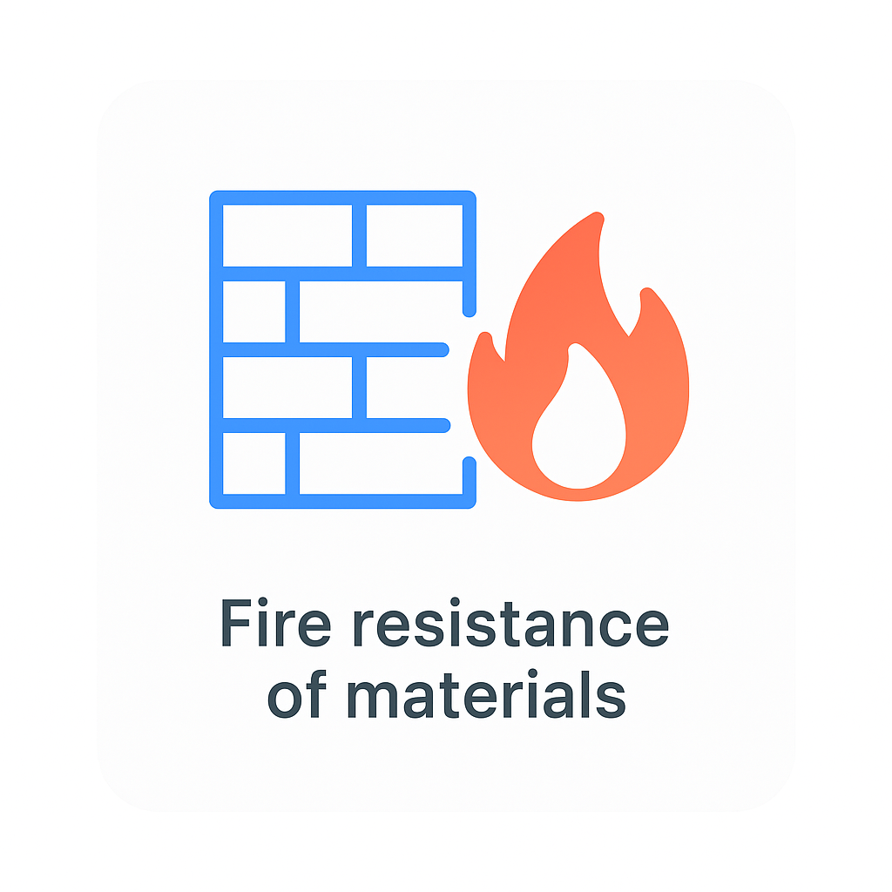
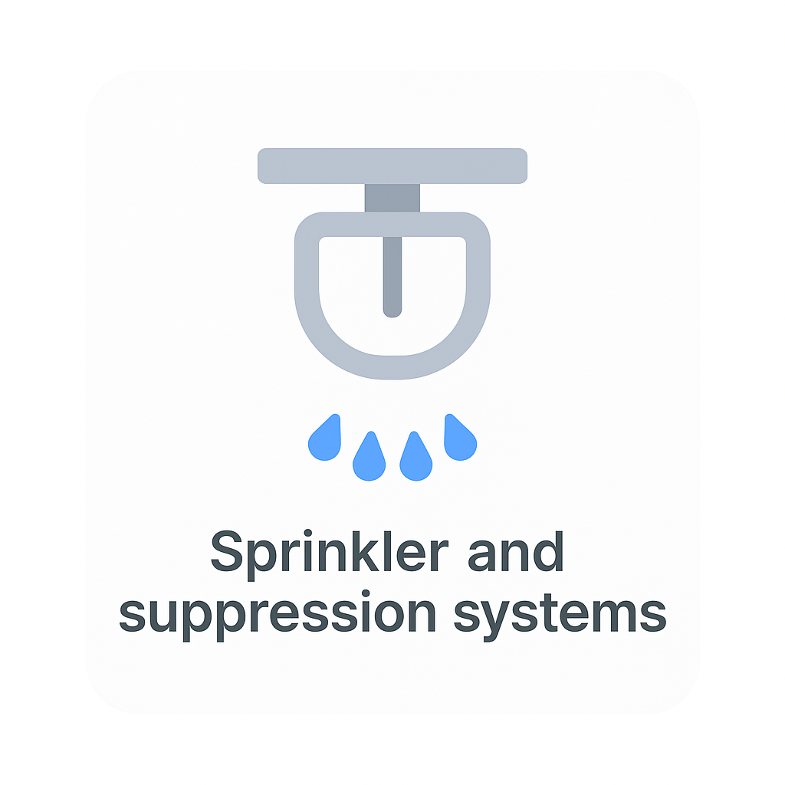

Overview
Fire Safety regulations for residential buildings. Covers alarms, escape routes, sprinklers, and duty holder responsibilities.
Clauses
Clause 1: Fire alarms and detection
Residential buildings must provide adequate fire detection and warning systems appropriate to the building type and height.

Typical evidence: alarm layout drawings, BS 5839 compliance, commissioning certificates.
Clause 2: Escape routes
Safe and accessible means of escape must be provided from all habitable rooms to a place of ultimate safety.
Common issues include travel distances, protected stairwells, and single-stair buildings.
Clause 3: Fire resistance of materials
Structural elements must maintain fire resistance for a specified duration to allow safe evacuation and fire service intervention.
Evidence includes fire strategy reports and product classification data.
Clause 4: Sprinkler and suppression systems
Sprinkler systems may be mandatory depending on building height, use, and risk profile.
Particularly relevant to high-rise residential developments post-2025 amendments.
Fire Safety Compliance Checklist
- Fire detection and alarm system specified
- Protected escape routes provided
- Fire-resistant construction verified
- External wall fire performance assessed
- Fire service access confirmed
Part B — Compliance Flow
A simplified decision path to help identify key fire safety checks. This is a visual aid, not legal advice.
Define the project
New build / refurbishment
Alarms, escape routes, signage
Structure & compartmentation
Cladding, sprinklers
Checklist & handover info